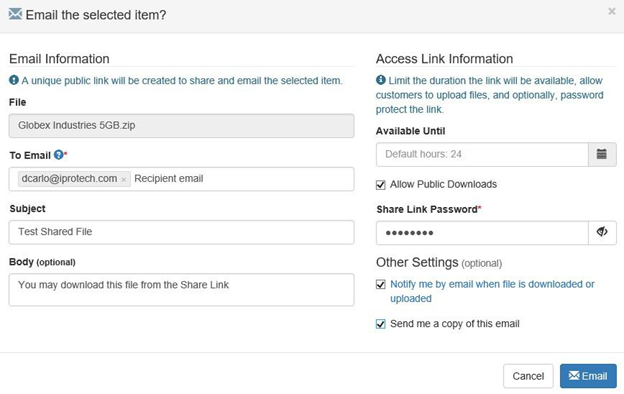
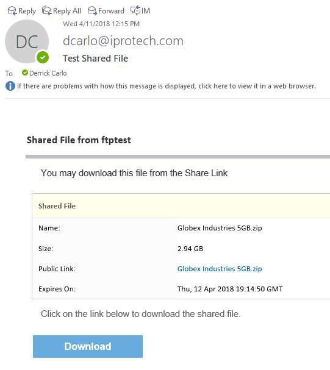
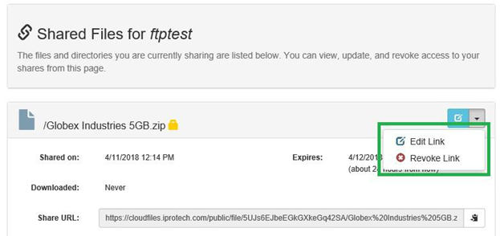

CloudFiles.Iprotech.com is a resource we use to support uploads and downloads as well as file sharing. There are two methods to connect to CloudFiles. Most users will:
Access CloudFiles via the Web Portal
Access via an FTP client - by default, this option is blocked for all users and can be granted upon approval.
Connect to your CloudFiles web portal using the following Web browsers:
Mozilla Firefox 14+
Google Chrome/Chromium 18+
Safari 7+
Microsoft Edge
You can log into your CloudFiles account by visiting https://cloudfiles.iprotech.com.
When you log into the CloudFiles site, you can upload, download, remove, and share files.
The CloudFiles user interface contains the following fields and functions:
Delete (1): You can select a file and choose to permanently delete it.
File List (2): This is the list of files in your personal storage space.
Selecting Files (3): This section is where you select files. If you click on an individual file name, it will prompt you to download the file to your desktop.
Actions (4): After you click this icon you are presented with options to Download a file, create a Share link, or Email a shared Link to anyone.
Start Upload (5): After you select files from the Add Files button, you can begin uploading files to your CloudFiles personal storage space.
Add Files (6): This will pop up a window that allows you to select files from your computer, which can then be uploaded by clicking on the Start Upload button.
Logoff (7): This allows you to log off the CloudFiles portal.
|
|
Note: You can also drag and drop files from your file manager into the CloudFiles web interface |

The main tasks you complete when using CloudFiles are uploading files and downloading files.
After you log in you will see a list of files. To download a file, you can either click the file name and follow the prompt to download, or you can click on the icon to far right of the file and click on Download.


When uploading files we request that, if you have more than one compressed (e.g. .zip) file, you zip all folders and files into a single .zip or .rar file.
To upload a file:
Click on Add Files, navigate to you file located on your computer,
Click on Start Upload to start the upload to your CloudFiles Personal Storage Space.
Once you click on Add Files and click Open your selected file will show at the bottom of the screen.
Click Start to initiate the upload. During the upload the file statistics will be displayed about the speed of the upload process. This will give a real-time view of the status and how much time is left for the upload to complete. The statistics shows:
Mbits per second
Percentage complete
MB uploaded out of a total


CloudFiles allows users that have the Share permissions to share files with External Customers.
There are two ways to share a file,
Create a Share Link.
Send an email to a user that includes the Shared Link.
Each option requires the Sender of the link to enter a password and choose a limited time frame until the Share Link expires.

Once you click on Share on the Share the selected item page, you can:
Select the file.
Set the date of expiration for the file.
Add a password.
If appropriate, check Allow Public Downloads.
Click Share.
A Public Link is displayed in the Actions section under the Share Document. You can then send this link to your recipient to download the file. They will need the password you entered to download the file.

Click Email.
A screen displays requesting you enter the following:
recipients email address
email subject
email body (optional)
Choose the day that the link will expire.
If desired, check the Allow or public downloads option.
Type in a password for the share link.
If you want to be notified when a file is downloaded select the option labeled Notify me by email when the file is downloaded or uploaded.
If you also want to receive a copy of the email check the Send me a copy of this email check box.

The recipient will receive the following email that includes a Download Link.

You will have to securely provide them with the password to download the file.
Once all users have successfully downloaded files from the links that were shared, you can manage and delete these from one location. To delete a Shared Link:
Click on Share” from the File Manager section on the left. Or, click on Share in the upper right.
You can edit the link or choose to revoke the link which permanently deletes the share and the link without deleting any files.

Related Topics